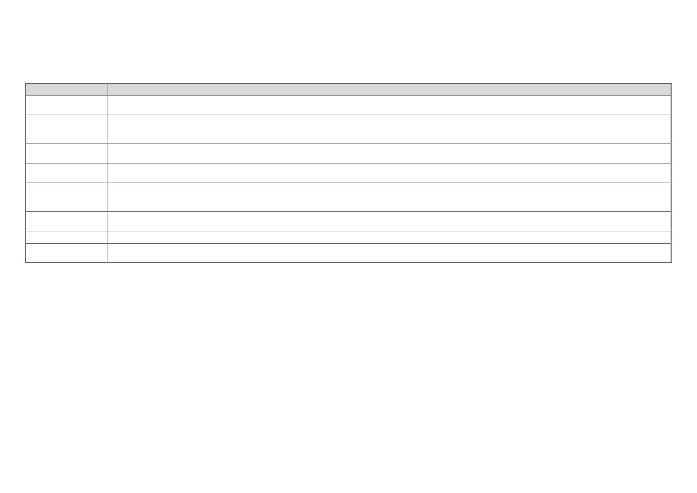

PHP'DE SUPER GLOBALS (SÜPER GLOBALLER / ÖN TANIMLI DEĞİŞKENLER)
PHP’de (Hypertext Preprocessor) (üstün yazı ön işlemcisinde) (Personal Home Page) (kişisel ana sayfada) kullanılmakta olan bir takım ön tanımlı değişkenler mevcuttur. Bu değişkenlere
super globals (süper globaller / ön tanımlı değişkenler) denir. Super globals (süper globaller / ön tanımlı değişkenler) dış kaynaklı değişkenlerden yerleşik ortam değişkenlerine, son hata iletisinden
son elde edilen başlıklara kadar geniş bir alanda kendilerini gösterirler. Bu değişkenleri inceleyecek olur isek;
value (değer)
description (açıklama)
Atanacak olan değişken için kapsama / etki alanlarının değiştirilmesini sağlar. Bu sayede global (küresel) alanda tanımlanmış bir değişkene local (yerel)
$GLOBALS
alandan, local (yerel) alanda tanımlanmış bir değişkene global (küresel) alandan ulaşılabilme imkanı tanır.
Http (Hyper Text Transfer Protocol) (hiper metin transferi protokolü) server’ı (sunucusu) tarafından oluşturulan, server (sunucu) ve işletme ortamı bilgilerine ulaşılabilme
$_SERVER
imkanı tanır. Fakat her Http (Hyper Text Transfer Protocol) (hiper metin transferi protokolü) server’ı (sunucusu) bu değerleri oluşturacak diye bir garanti yoktur. Ayrıca
her Http (Hyper Text Transfer Protocol) (hiper metin transferi protokolü) server’ı (sunucusu) farkı değerler üretebilir.
URL (Uniform Resource Locator) (nizami kaynak bulucu) üzerinden gelen verilere ulaşılabilme imkanı tanır. Genellikle URL (Uniform Resource Locator) (nizami kaynak
$_GET
bulucu) üzerinden gelen istekler ve form işleme işlemleri için kullanılmaktadır.
İstek gönderim tag’ları (etiketleri) aracılığı ile gelen verilere ulaşılabilme imkanı tanır. Genellikle kapalı yöntemle gelen istekler ve form işleme işlemleri için
$_POST
kullanılmaktadır.
URL (Uniform Resource Locator) (nizami kaynak bulucu) üzerinden veya istek gönderim tag’ları (etiketleri) aracılığı ile gelen verilere ulaşılabilme imkanı tanır.
$_REQUEST
Genellikle URL (Uniform Resource Locator) (nizami kaynak bulucu) üzerinden gelen istekler, kapalı yöntemle gelen istekler ve form işleme işlemleri için
kullanılmaktadır.
Http (Hyper Text Transfer Protocol) (hiper metin transferi protokolü) server’ına (sunucusuna) herhangi bir dosya yükleme işlemi esnasında, ilgili dosya verilerine
$_FILES
ulaşılabilme imkanı tanır.
$_COOKIE
Herhangi bir kullanıcının browser’ına (tarayıcısına) yerleştirilmiş olan cookie (çerez) verilerine ulaşılabilme imkanı tanır.
Herhangi bir kullanıcı için session (oturum) tanımlama imkanı tanır. Ayrıca daha önceden tanımlanmış olan session (oturum) verilerine de ulaşılabilme
$_SESSION
imkanı tanır.